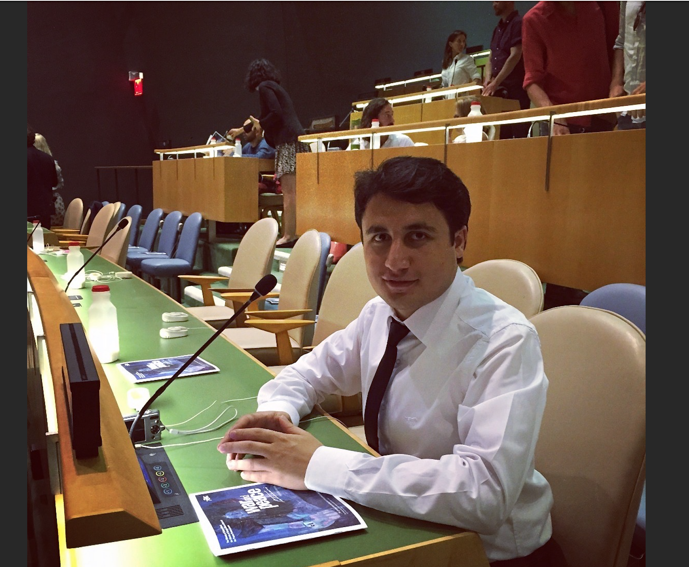
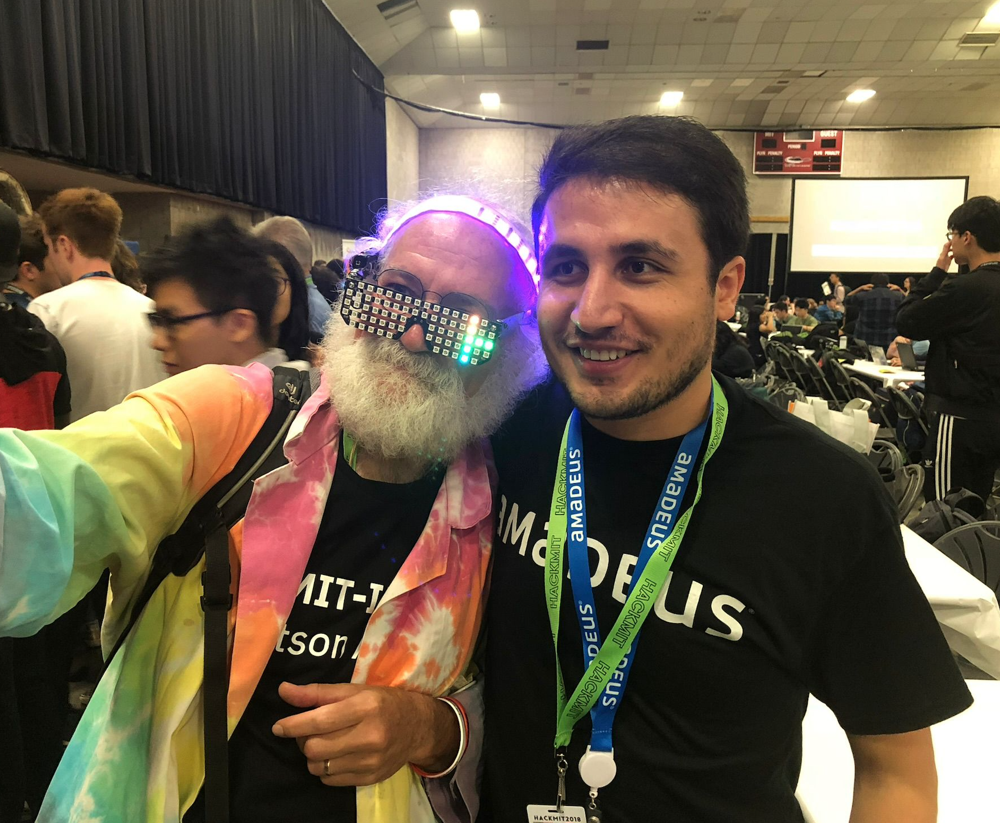
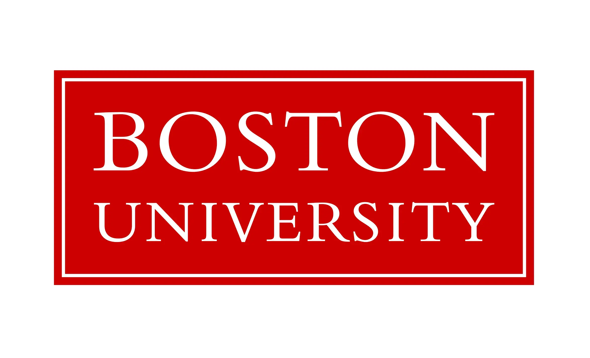
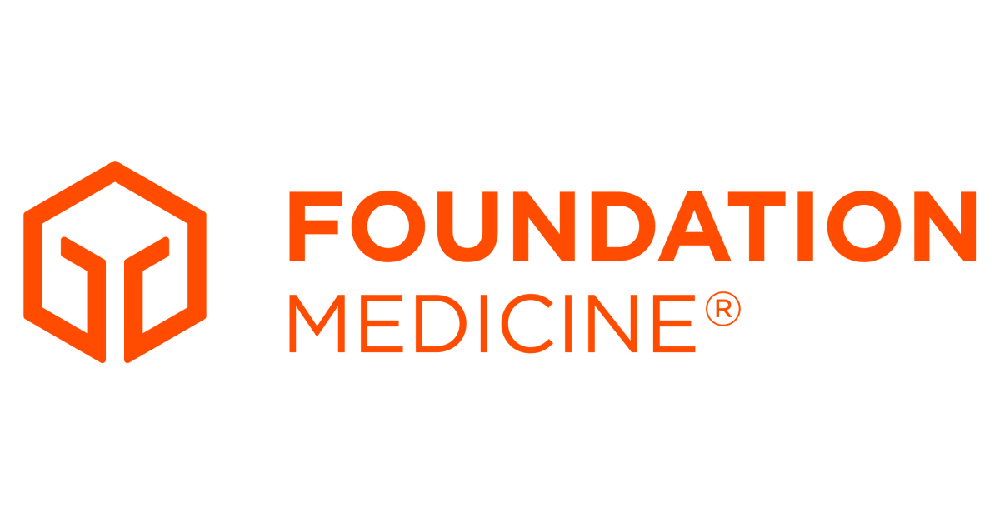
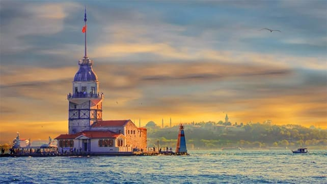
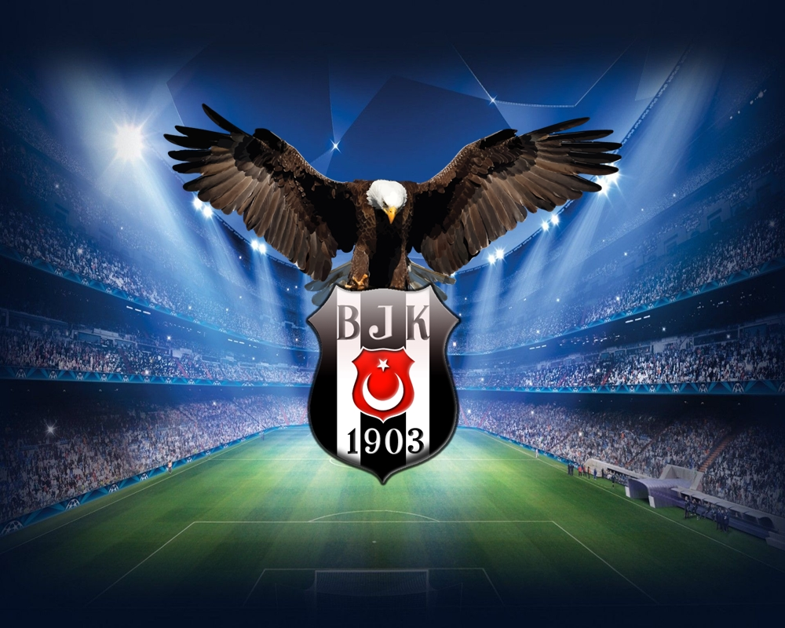
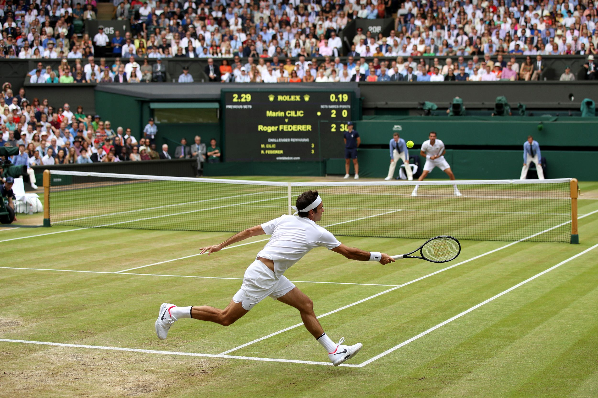

I am a software engineer, and my story is one of relentless pursuit. I've embarked on a journey to redefine the landscape of technology consulting, following in the footsteps of industry giants while forging our path of innovation and excellence. My story is written in the code of collaboration, adaptability, and client-centricity, where every project is a chapter in our quest to drive innovation and impact. With an exceptional team, a culture of continuous learning, and a global perspective, our story unfolds with each project, each innovation, and each success. Join us on this transformative journey as we continue to shape the future of technology consulting, one story at a time.
 My Story
Professional Summary
With over seven years of experience in the IT industry, I have established myself as a Software Engineer III in Test at Foundation Medicine. My professional journey has been marked by a deep commitment to ensuring software quality and a versatile skill set that spans multiple domains, including Health, Travel, and Telecommunication. I excel in developing and executing comprehensive test cases, harnessing the power of automation to drive efficient and thorough testing processes. My proficiency extends to a spectrum of technical tools and languages, such as Java, Python, SQL, and Selenium, which I expertly wield to build robust testing frameworks. These frameworks, constructed from scratch, are crafted using methodologies like the Page Object Model, Page Factory, Singleton Pattern Design, and integrated with Maven, Java, Selenium WebDriver, JUnit, TestNG, Cucumber, Jenkins, JDBC, and the REST Assured library. In addition to my technical prowess, I have cultivated a profound understanding of Agile development methodologies. This expertise enables me to seamlessly collaborate with agile teams, contributing significantly to iterative and collaborative software development cycles. My analytical acumen and adept problem-solving skills have consistently led to the timely identification and resolution of issues. My work ethic revolves around a steadfast commitment to delivering high-quality software, a commitment that reflects my unwavering dedication to the field and my pride in consistently producing superior results.
Education and Work Life
Pursuing a Master's degree at Boston University 
Working at Foundation Medicine 
My Hometown
Istanbul
I come from the beautiful city of Istanbul, Turkey. Istanbul is a vibrant metropolis that bridges Europe and Asia, offering a rich blend of history, culture, and breathtaking architecture.
My Hobbies
In my free time, I enjoy reading books, playing tennis, watching soccer, following the NBA, and indulging in movies. These activities provide me with both physical activity and mental relaxation, allowing me to unwind and stay refreshed.
My Favorite Top 5 Books
- Masumiyet Muzesi by Orhan Pamuk
- 1984 by George Orwell
- Samarkand by Amin Maalouf
- Serenade by Zülfü Livaneli
- Crime and Punishment by Fyodor Dostoevsky
My Favorite Top 5 Movies
- The Lord of the Rings Series
- Dead Poets Society
- The Pursuit of Happyness
- Interstellar
- Togo
My favorite soccer team is Besiktas
I love playing tennis and Roger Federer is my all-time favorite player.
